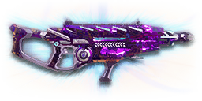

← Back to the Darkstar comparison
Sage Guide · Vanu Sovereignty · Combat Medic
The auraxium reward for mastering assault rifles — a Pulsar VS1 rebuilt around a heat battery instead of a magazine. No ammo, no magazine, no mid-fight dry click. Just a heat meter you have to respect.
The one-line verdict: the most accurate-feeling starter-class rifle a VS medic can carry — tight cone, gentle recoil, and bullets that never drop. Its price is a 27-shot heat budget: two kills, then a breath, or it locks up on you.

The Darkstar · Vanu Sovereignty · heat-based assault rifle
Every enemy infantry has 1,000 health (500 shield + 500 health). Your bullet does 143 damage up close, fading to 112 at long range. Headshots count double, leg shots count less (×0.9). And one thing Vanu players should never forget: your bullets do not drop — VS weapons have no bullet drop, so at any range you aim dead-on at the target; only the 615 m/s travel time matters, and that's fast enough that leading a target is rarely needed inside 50 m. That gives you three numbers worth memorising:
| Range | Damage | Head | Chest | Legs | Chest vs shielded Heavy |
|---|---|---|---|---|---|
| Close · 0–10 m | 143 | 4 | 7 | 8 | 11 |
| Mid · 10–50 m | 143→125 | 4 | 8 | 9 | 12 |
| Far · 50–80 m+ | 125→112 | 5 | 9 | 10 | 13 |
Perfect-accuracy times to kill: 4 headshots ≈ 0.26 s, 7 chest shots ≈ 0.52 s up close. In real fights you'll land maybe half your rounds — still, this is why the head matters so much on this gun. And remember the heat budget from the hero strip: a 7-shot kill uses a quarter of your 27-shot meter; a 9-shot kill uses a third.
Full power to 10 m, then a steady slide to 125 at 50 m and minimum at 80 m. The teal line shows Soft Point Ammunition, which stretches full power to 15 m.
One gun, four fighting styles. The right technique changes with distance — use the range finder below to see what your bullets do at any range, then learn the four bands underneath it.
How to fight hereAim down sights at the upper chest and neck. Fire in bursts of 5 — your recoil climbs into the head for free damage.
Aim: centre of the chest, from the hip. Keep moving.
Scoping in costs you time and halves your move speed — at arm's length that gets you killed. The Darkstar has good hip accuracy for an assault rifle. Strafe side to side (A/D) while firing so you're hard to track, and remember your job: you're the squad's medic, so a kill here is a bonus — staying alive to revive the squad is the real win.
Aim: neck / upper chest. Bursts of 5 rounds.
This is where the gun earns its keep: full 143 damage, mild recoil, fast handling. Start your crosshair at the neck — the natural upward climb walks your shots into the head, and 4 head hits end the fight in about a quarter of a second. Strafe while scoped; you're slower, but a moving target still beats a still one.
Aim: chest. Bursts of 5 rounds, pause between them.
Damage is sliding toward 125 and your cone of fire blooms if you hold the trigger. Fire a burst, release for a split second to let accuracy reset, fire again. The recoil drifts up and to the right (12.75–15°), so pull your mouse gently down and to the left. Crouch or stand still when you can — both tighten your shots. And no holdover: your bullets don't drop, so the dot stays on the chest.
Aim: chest. Taps of 3–5 rounds at exposed targets only.
At 112 damage you need 9 chest hits — a long, loud advertisement of your position, and a third of your heat meter per kill. Take these shots at stationary or fleeing targets, medics reviving, and engineers on turrets. Otherwise, your better play is to close the distance behind cover. Knowing when not to shoot is a skill too — especially when your squad needs you alive.
The Darkstar has no magazine and no ammo pool. Every shot adds 37 heat to a meter that holds 999 — that's 27 shots before it overheats. Stop firing for about a third of a second (0.343 s) and it starts cooling at 364 heat per second — roughly 10 shots' worth per second — so a fully hot meter empties in about 2.7 s. Push it all the way to the red and the gun locks until the meter fully empties, so treat 20 shots as your practical limit and vent early.
A 20-shot fight leaves the meter about three-quarters full — one more short burst and you're locked out.
The upside is real: you never run out of ammo, never fumble a mid-fight dry click, and never sit through a magazine swap while your squad is bleeding out. Between fights the meter is always full again — and you can press R to vent the heat early while you're safe behind cover. The discipline is simple: burst, pause, burst — the pauses that reset your cone of fire (section 03) are the same pauses that cool your gun.
Your accuracy is decided by two things before skill even enters it: what your body is doing (your stance sets the starting cone of fire) and what your finger is doing (holding the trigger grows that cone with every shot). The Darkstar has no fire-mode switch — full-auto only — so "firing modes" are something you do with your finger, not a setting on the gun.
| Stance | Starting cone | What it means for you |
|---|---|---|
| Sprinting | 7.0° | Maxed out — the widest the cone can be. Never start firing from a sprint. |
| Hipfire, moving | 2.85° | Walking or strafing from the hip. Fine inside ~8 m, leaks rounds past the target beyond it. |
| Hipfire, standing | 2.3° | Your point-blank default. The 0.32 m ring at 8 m in section 04 is this stance drawn out. |
| Hipfire, crouched | 1.725° | The tightest hipfire you have (2.3° if you crouch-walk). Crouch when holding a doorway from the hip. |
| Aimed (ADS), feet planted | 0.10° | Standing or crouched makes no difference here — more than twenty times tighter than hipfire. This is why aiming before you fire matters. |
| Aimed (ADS), strafing | 0.25° | The moving floor while scoped — still far tighter than any hipfire. You move at half speed (0.5×). Strafe between bursts to stay hard to hit; plant your feet during each burst. |
| Mode | How your finger does it | Use it at |
|---|---|---|
| The mag dump | Hold the trigger and don't let go | Point blank only, or suppressing a doorway. Bloom maxes out fast — and on this gun a full hold is the whole 27-shot heat meter in one go, so past ~8 rounds you're spraying and about to lock up. |
| Bursts — the default | Hold for 5 rounds, release ~0.15 s, hold again. 6–8 rounds is fine while you're learning | Almost everything, 8–50 m. Each release resets the cone, so every burst starts at 0.10° — and each pause lets the heat meter cool a little. |
| Tap-fire | Short taps of 3–5, or single clicks, with a real pause between | 50 m and out, at exposed or stationary targets. Slow, but every round goes where the dot is — and the heat barely moves. |
A target 30 m away, aiming down sights. Press and hold FIRE (mouse, touch, or hold Space with the button focused) and watch the holes walk wider the longer you hold — that's firing from an ever-growing cone. Release, let the cone reset, fire again. Aim for bursts of 5; 6–8 is tolerable while you're new. This practice window is shared by the whole Sage series: it's driven by a weapon profile plugged into the window — here the Darkstar's (698 RPM, 0.10° starting cone, 0.05° bloom per shot, target at 30 m) — and the spread is drawn at true scale from those numbers.
Cone of fire — fills as you hold, empties when you release.
Your bursts will be graded here — green at 5 rounds, tolerable up to 8.
Some things are easier to show than to say. Here's what your bullets actually do: how wide hipfire spreads at 8 metres, what a good burst rhythm looks like, and what the 2x sight really changes. The hands-on version — holding the trigger yourself — is the practice window in section 03.
A full-size target 8 m away — an arm's-length room fight. The rings show where hipfire rounds land around your aim point (the chest). Sizes are drawn to scale from the gun's real cone-of-fire numbers.
Read it this way: standing still, the 0.32 m ring sits well inside the chest — most rounds hit a target this size, which is why hipfire works point-blank. But move and it grows to 0.40 m — wider than the torso is thick — so the edge rounds start leaking past him, and the rings only grow with distance while the man doesn't. Past ~10 m that's rounds missing entirely: the exact moment to switch to aiming down sights, where the spread shrinks to a dot. (Ring sizes use the real geometry: spread diameter = 2 × distance × tan(cone ÷ 2).)
Every shot widens your cone of fire ("bloom"). Releasing the trigger for a heartbeat resets it. Same 15 rounds, two very different outcomes — and on a heat gun the second version also leaves your meter cool:
The target pattern is bursts of about 5 rounds — that's the ideal. Bursts of 6–8 are fine while you're new (call it newbie tolerance). Past that, the bloom (0.05° per shot aimed, 0.10° from the hip) keeps growing with every shot, so the extra bullets mostly decorate the wall behind your enemy instead of hitting him. Short bursts also leave you heat for the second enemy — remember, the meter is only 27 shots, and a 9-shot kill at range is already a third of it.
No zoom. The target at 35 m is small but the view is wide open — you see the crate, the tower, and the next enemy coming. Fast to aim, nothing blocks your edges. Best inside ~40 m.
Same target, same 35 m — but he looks twice as tall, so placing shots on his chest and head gets much easier. The price: your view narrows to the round window, the crate and tower are gone, and close targets feel fast and huge. Best at 25–50 m.
That's the whole 30-cert decision from section 05 in one picture: 1x for awareness, 2x for precision. Most veterans carry both and swap per base — indoors 1x, open ground 2x.
Good news: two of the best attachments — the Compensator and the Forward Grip — are built into the gun, free, because this is the auraxium version of the Pulsar VS1. Everything below is an optional sidegrade, not an upgrade. Buy in the order shown and stop whenever the gun feels right. Two things that don't exist for this gun at all: there is no suppressor and no extended magazine — the heat battery is the magazine, and it can't be enlarged.
The gun's default open sights. Usable, but a red dot is clearer — and cheap.
Good: your first fights with the gun, before you've spent a single cert.
Bad: anything past 25 m — the posts cover too much of a small target.
A clean holographic dot-and-circle reticle with no zoom. Your default once bought, and honestly your best all-round option.
Good: everywhere indoors and out to ~40 m — which is most PlanetSide fights.
Bad: picking out targets past 50 m; that's what the 2x is for.
Doubles your view magnification. Costs almost nothing — the price of a couple of kills.
Good: open-field bases, tower fights, and your 25–50 m burst game. Swap between 1x and 2x per fight.
Bad: tight indoor rooms — the zoom makes close targets feel fast and huge.
Night-vision sight: enemies glow white against a dark view, and it sees through smoke.
Good: night fights, smoky doorways, spotting infiltrators by their outline.
Bad: daytime and long range — its view is short-ranged and washes out in bright light.
VMS / V3 Holo (3.4x) and OG-4 / CSZ (4x) — sniper-style magnification on an automatic rifle.
Good: almost nothing a beginner does — recoil magnifies too, and tunnels your vision.
Bad: any fight inside 30 m, which is where you'll spend your first hundred hours.
Already fitted at the factory: vertical recoil cut by 30%. The price is already paid too — hipfire spread is 15% wider and enemies see you on the minimap from 35 m farther away when you fire.
Good: aimed, mid-range play — which is most of what this gun does.
Bad: nothing you can change — it's part of the gun. If you hipfire a lot, the Laser Sight below is your counterweight.
Your shots bloom 20% slower while aiming — longer accurate bursts. But you move 20% slower while scoped.
Good: holding a lane or doorway at 25–50 m, firing from a steady position.
Bad: aggressive room-clearing — the slower scoped strafe makes you an easier target.
Hipfire bloom grows 40% slower — much steadier hip spraying. But vertical recoil rises 20% when you do aim.
Good: a dedicated close-quarters build paired with the Laser Sight.
Bad: general play — it taxes the aimed shooting you'll do most.
Hides your muzzle flash so your own view stays clear at night — but you appear on enemy minimaps from 15 m farther away.
Good: night fights where your own flash blinds you. A comfort pick, nothing more.
Bad: as an early purchase — it changes no fight outcome. Buy it last, if ever.
Already fitted: side-to-side recoil cut by 25%, keeping your bursts on a single target. Tiny cost: weapon swap is 0.15 s slower.
Good: the default for aimed, mid-range play — it's on the gun whether you like it or not, and you will like it.
Bad: nothing meaningful. It only stops helping if you never aim down sights.
An underbarrel launcher that fires a healing projectile: it heals allies over time where it lands and cleanses most status effects (like burning or poison) on impact. Toggle it with the Gear Slot 1 hotkey. Cost: the gun takes 0.25 s longer to equip while it's fitted.
Good: shooting it at a wounded squadmate holding a doorway, or at a group of allies pushing through a choke — healing from range while you stay behind cover. This is the medic fantasy in one attachment.
Bad: a straight duel — it does no damage to enemies, and the slower equip time hurts if a fight surprises you with your tool out.
Hipfire accuracy improves by a third (33% tighter cone). It shares the rail slot with the other rail options — fitting it means choosing hipfire over the Angled Grip or Darklight for that slot.
Good: indoor point-holds and stairwell fights where you hipfire inside 8 m.
Bad: open bases — you give up aimed recoil control for a bonus you rarely use.
The first shot of each burst kicks 60% less — but side-to-side recoil rises 10% on everything.
Good: disciplined burst and tap-fire at 40 m+, where every burst starts fresh — and this gun's first-shot kick is a strong ×2.75, so taming it is worth more here than on most rifles.
Bad: beginners' longer bursts — the sideways tax adds up once you hold past 5 rounds.
A torch whose beam reveals cloaked infiltrators. Toggle it with the attachment key (X by default).
Good: hunting a stalker infiltrator camping your capture point — sweep corners with it.
Bad: as your everyday rail — it gives zero accuracy help, and the beam advertises your position.
Full 143 damage now reaches to 15 m instead of 10 m (the teal line on the chart above). Cost: bullets fly 10% slower (615 → 554 m/s).
Good: nearly always — most duels happen at 10–20 m, exactly where this extends your 7-shot / 4-headshot kill.
Bad: long-range duels against runners, where the slower bullet needs more lead. A small price.
Bullets fly 10% faster (615 → 677 m/s) and minimum damage reaches 20 m farther (112 now holds to 100 m). Cost: full damage ends 2 m sooner (10 m → 8 m).
Good: open-field fights at 40 m+, where the faster bullet and longer damage floor earn their keep.
Bad: close-quarters play — you give up 2 m of full damage for speed you don't need indoors.
In plain words: each bullet hits a bit softer up close, because 40% of its direct damage is converted into a small explosion on impact — the blast splashes enemies standing close to where the bullet lands. The trade is steep: bullets fly 50% slower (615 → 308 m/s), so leading moving targets gets much harder.
Good: firing into a packed doorway or a cluster of enemies on a capture point, where the splash catches a second man your bullet wasn't aimed at.
Bad: almost any fair 1-vs-1 — you lose direct damage, and at half velocity a strafing enemy is twice as hard to hit. A niche pick, not a default.
0 certs · Day one
What the directive hands you. Genuinely good — the two best attachments are already fitted. Learn the gun on this before spending anything.
130 certs · Recommended
The best value in this whole guide. Covers every fight from a doorway to a tower courtyard.
230 certs · Indoor brawler
Built to hipfire down stairwells and hold a capture point room. Swap back to the All-Rounder outdoors.
130 certs · Squad medic
Heal your squad from range with the Cure Launcher, then switch back to the rifle and finish the fight. The loadout that makes the Darkstar more than a Pulsar with a battery.
Headshots deal double damage: 4 kills up close versus 7 to the chest. Don't aim at the head directly — aim at the neck and let the gun's natural upward climb carry shots two and three into the skull. It's the single biggest damage upgrade you own, and it's free.
Every shot widens your cone of fire. Holding the trigger past ~8 rounds at range means later bullets fly around your target, not into it. Five rounds is the ideal burst; release the trigger for a heartbeat between bursts — your accuracy resets, and the pause cools your heat meter at the same time.
Your meter is 27 shots, and a kill takes 7–9 of them. Two kills and you're most of the way to the red — and an overheated gun locks until the meter fully empties, the worst possible moment. After every kill, stop firing for a second behind cover: the meter starts cooling after a third of a second. Press R to vent early while you're safe. Treat 20 shots as your working limit, not 27.
Walk with your crosshair at head height, pointed where an enemy's head will appear — a doorway edge, a corner, stairs. Most beginners lose fights in the half-second spent dragging the crosshair onto target. While firing, tap A/D to strafe: a moving medic is dramatically harder to headshot back. And remember — no bullet drop means the dot stays on the chest at any distance.
Your damage, accuracy and heat budget all shine at close-mid range. Sprint between cover, use buildings and rocks as stepping stones, and arrive at your range before opening fire. And you're a Combat Medic: your squad needs you breathing more than it needs one more kill. Win the fight, revive the fallen, heal up, then push — in that order.
Every gun has a price. Here's where the Darkstar pays — and the habit that covers each hole.
A normal assault rifle carries 30 rounds plus a reserve. You carry 27 shots of heat and no way to make it bigger — there's no extended magazine for this gun. A 9-shot kill at range is a third of your meter, and a missed burst against a second enemy can leave you locked out mid-fight.
Play around it: burst discipline (habit 3) and early venting (habit 4). Two kills, then a breath behind cover. The pauses that reset your cone are the pauses that cool your gun — one habit pays twice.
698 RPM is fast, but the TR T1 Cycler fires 750 RPM — if you and an enemy medic trade chest shots face-to-face, their bullets add up faster than yours (0.48 s to your 0.52 s).
Play around it: don't trade fairly. Aim for the neck, use corners, and break line of sight — your per-bullet accuracy and your tighter 0.10° first-shot cone win fights that start on your terms.
Past 80 m you're at 112 damage: 9 chest shots, 13 against a shielded Heavy, with bloom fighting you the whole way. Snipers and battle rifles own that ground.
Play around it: tap-fire at exposed targets only, and spend the rest of the time closing distance. You're a medic — the front line, next to your squad, is your address.
Its recoil angle is 12.75–15° rightward, and the first shot kicks ×2.75 — the strongest first-shot kick of any gun in this comparison. In a long burst your aim walks off the target's right shoulder — you'll see this clearly in the VR drill below.
Play around it: pull your mouse down-left while firing, in the opposite direction of the climb. The built-in Forward Grip already trims the sideways part by 25%, and the Angled Forward Grip (section 05) tames that first-shot kick if it keeps biting you.
Like most rifles, you move at half speed while aiming down sights (0.5×), and the gun takes 0.75 s to swap to — slower still with the Cure Launcher fitted (+0.25 s). Slow if a fight surprises you with your medical tool out.
Play around it: hipfire inside 8 m instead of scoping (that's the Point Hold build's whole idea), and swap weapons behind cover, never in the open.
The Darkstar isn't bought — it's the reward for completing the Master Assault Rifles directive (five assault rifles auraxiumed, 1,160 kills each). Until then, your starter is the Pulsar VS1, which this gun is built from.
Play around it: everything on this page transfers — the Pulsar VS1 has the same 143→112 damage, the same 698 RPM, the same cones. Learn the habits on the Pulsar; the Darkstar is waiting at the end of the road, with its battery and its Cure Launcher.
Open the world map, travel to VR Training, and run these on the target dummies. Five minutes before a play session beats an hour of dying confused.
Aim at a wall 20 m away and fire a 10-round burst without touching the mouse. Watch the bullet pattern climb up-right — that's your gun's fingerprint, first-shot kick and all. Repeat, this time pulling down-left, until the group stays fist-sized.
Walk the dummy range keeping your crosshair glued to neck height the whole time, snapping to each new target without dipping to the floor or sky. Slow and clean first; speed comes on its own.
At 30–40 m, kill dummies with bursts of 5, releasing the trigger fully between bursts. If a burst goes wide, shorten it. Goal: whole kills without a single wild round — and watch the heat meter stay cool while you do it.
Pick a dummy, stand 5 m away, and circle it with A/D while hipfiring it down without stopping. This is your point-blank survival skill — the one that fires while your movement does the defending.
Fire exactly 20 rounds at a dummy, then stop and watch the meter: it starts cooling after a third of a second and empties in under three. Now fire 27 in one hold and feel the lockout. Train your hands to stop at 20 and vent behind cover until it's automatic — in real fights you'll do it without thinking, which is the point.